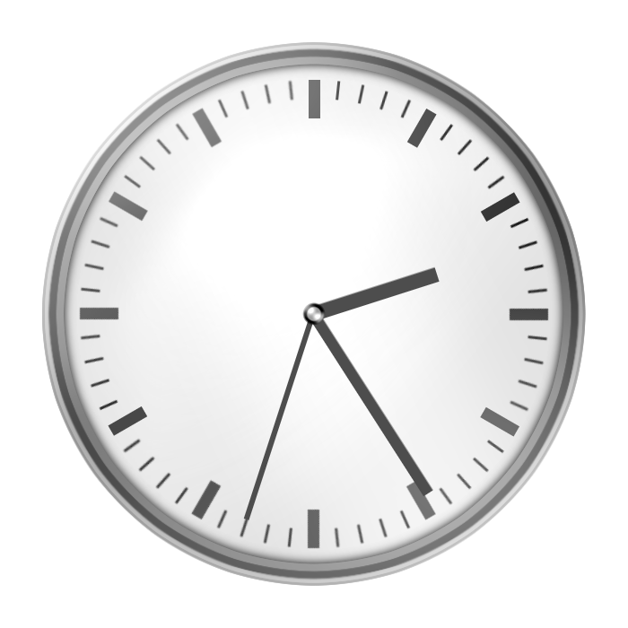

地震情報を表示するWindows専用時計ソフト
EqClock for yuminQuakelive

ソフトの紹介
このソフトは P2P地震情報 から取得した地震情報を表示する時計ソフトです。
このソフトではデジタル時計やアナログ時計、地震情報が確認できるソフトで、
配信などにご利用できます。
ソフトの写真
メインウインドウ - EqClock

地震情報ウインドウ - 各地の震度

アプリ情報
EqClock Ver:0.01（11月08日リリース）
開発名：地震情報・アナログ時計表示ソフトウェア
開発者:yumin地震観測所 - 事務部情報課 課長 地震情報NNW - ゆっくりねい
情報取得元： P2P地震情報JSON API v2
フィードバック
バグ・不具合等ありましたら開発者のX（旧:Twitter）のDMまでお願いします。
X（旧:Twitter）:yukkuri_nei8
ダウンロード
バージョン情報：初期リリース Ver:0.01（11月08日リリース）
EqClockをダウンロード
使用方法
1. EqClockをダウンロードし、ダウンロードしたZipファイルを展開します。
2. 「EqClock.exe」を起動すれば利用可能になります。
注意
リンクを開くと自動的に.NET Framework4.7.2 ランタイムがインストールされます。
謝辞
お問い合わせ
バグ・不具合等などがありましたら開発者の地震情報NNWのX（旧:Twitter）のDM（ @yukkuri_nei8 ）までお願いします。
yumin地震観測所お問い合わせフォーム に記入いただいても対応をお断りさせていただきます。
CopyRight: ©2022 - 2023 yuminQuakelive. All rights reserved.